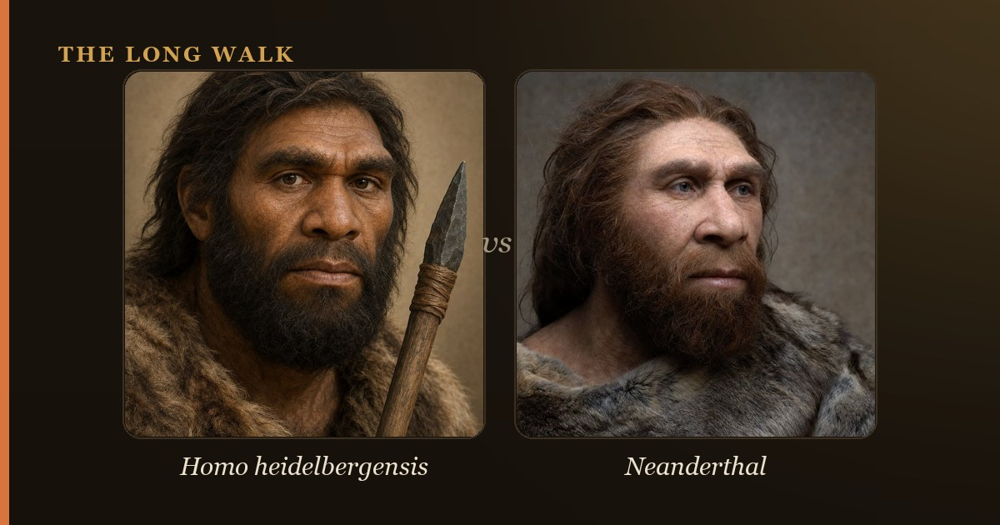

Homo heidelbergensis vs Neanderthals compares a loosely defined Middle Pleistocene species with its best-known possible descendants. H. heidelbergensis is based on the Mauer jaw from Germany, about 609,000 years old, and is often used for large-brained humans in Africa and Europe between about 700,000 and 300,000 years ago. Neanderthals (about 430,000 to 40,000 years ago) had larger brains and a distinctive face and skull. Fossils from Sima de los Huesos in Spain show that Neanderthal traits appeared in stages, and DNA puts those 430,000-year-old people on the Neanderthal line, which makes the “ancestor” label harder to apply.

On 21 October 1907, a worker named Daniel Hartmann was digging sand at the Grafenrain pit in Mauer, near Heidelberg, when he hit a heavy lower jaw about 24 metres down. The next year, the anatomist Otto Schoetensack named it Homo heidelbergensis. Dating published in 2010 puts the jaw at about 609,000 years old.
The jaw has no skull, no face and no braincase. Yet for more than a century, it has anchored a species that was supposed to explain where Neanderthals, and perhaps we, came from. The Homo heidelbergensis vs Neanderthals comparison only makes sense once you see how little the name rests on, and how much the fossils found since have changed.
A name in search of a definition
Because the Mauer jaw cannot be compared with skulls, the species is in practice defined by other fossils. In Africa, these include the Kabwe skull from Zambia (once called Homo rhodesiensis), dated in 2020 to about 300,000 years ago, and the Bodo cranium from Ethiopia, about 600,000 years old. In Europe, they include skulls from Petralona in Greece and Arago in France. These people had brains of roughly 1,100 to 1,300 cc, thick brow ridges and large faces. In many textbook family trees, they form the common stock from which Neanderthals evolved in Europe and Homo sapiens in Africa.
The trouble is that the European and African fossils do not look like one population. Several European specimens already have Neanderthal features that the African ones lack. If those Europeans are early Neanderthals, then “heidelbergensis” becomes a label for whatever came before, rather than a species with clear edges.
Sima de los Huesos: early Neanderthals, 430,000 years ago
At the bottom of a shaft in the Sierra de Atapuerca, northern Spain, excavators have recovered thousands of bones from at least 28 people, about 430,000 years old. In 2014, Juan Luis Arsuaga and colleagues published 17 skulls from the site. The faces and teeth already show Neanderthal traits: a forward-projecting midface and front teeth like Neanderthals’. The braincases do not. They are smaller (averaging about 1,230 cc) and lack the Neanderthal shape at the back.
In 2016, nuclear DNA from two of the Sima individuals placed them on the Neanderthal side of the split from Denisovans. So by 430,000 years ago, the Neanderthal lineage already existed, and its members looked only partly like later Neanderthals. The Sima fossils were once assigned to heidelbergensis; most researchers now treat them as early members of the Neanderthal lineage.
How the Neanderthal face was assembled
The Sima results fit an idea called the accretion model, set out by Jean-Jacques Hublin and colleagues in the 1990s. It holds that Neanderthal features did not arrive as a package. They built up in European populations over hundreds of thousands of years, probably as small, isolated groups drifted and adapted to cold.
- Face and teeth first. By about 430,000 years ago (Sima de los Huesos), the face projects at the midline and the jaws and teeth look Neanderthal.
- Back of the skull next. The Swanscombe skull from England, about 400,000 years old, has a suprainiac fossa, a small depression on the back of the skull typical of Neanderthals.
- Full package last. The rounded side profile, the bun at the back of the skull and the large braincase appear in fossils from the last 200,000 years or so, such as Krapina in Croatia.
The model is widely used, but the timing of each step is debated, because the dating of several key European fossils is poor.
Homo heidelbergensis vs Neanderthals: what actually differs
| Trait | Homo heidelbergensis (broad sense) | Neanderthals |
|---|---|---|
| Time | ~700,000–300,000 years ago | ~430,000–40,000 years ago (lineage) |
| Range | Africa and Europe; possibly Asia | Europe, western and central Asia |
| Brain | ~1,100–1,300 cc | ~1,410 cc average in later Neanderthals |
| Face | Large, broad, heavy brow | Projecting midface, large nose, double-arched brow |
| Back of skull | Angular, no bun | Occipital bun, suprainiac fossa |
| Tools | Acheulean handaxes | Mousterian, made with prepared cores |
Below the neck, the difference is smaller. A shin bone from Boxgrove in England, about 500,000 years old, belonged to a tall, powerfully built person. Later Neanderthals were shorter, with the wide chests and short limbs of cold-adapted people.
Tools changed gradually too. Boxgrove is full of finely made handaxes and butchered horse and rhino bones. Over time, European groups shifted to prepared-core methods such as Levallois, which became the basis of the Mousterian. The Schöningen spears from Germany, now dated to about 200,000 years ago, were probably made by early Neanderthals; see the Schöningen spears.
From erectus to heidelbergensis
Compared with Homo erectus, the heidelbergensis-grade fossils have bigger brains, more rounded braincases with thinner walls, and finer handaxes. The best guess is that they evolved from African erectus populations, but the steps between about 1 million and 700,000 years ago are poorly known. Homo antecessor from Gran Dolina, Spain, about 850,000 years old, is one of the few European fossils from that gap; see our Homo antecessor article.
Tools, fire and hunting
The archaeology changes more gradually than the anatomy. At Boxgrove in southern England, about 500,000 years ago, people made fine Acheulean handaxes and butchered horses, rhinos and deer, leaving cut marks on the bones. A single quartzite handaxe was found among the Sima de los Huesos bones; some researchers think it was placed there deliberately, though that is disputed.
From about 300,000 years ago, Europe's toolmakers increasingly used the Levallois method, preparing a stone core so that a flake of planned shape could be struck off. This prepared-core technique became typical of Neanderthal Mousterian toolkits. Neanderthals also made birch tar glue to fix stone points to handles; the oldest example, from Campitello in Italy, is around 200,000 years old. The wooden spears from Schöningen in Germany, now dated to about 200,000 years ago, show hunting with carefully made weapons. Regular use of fire appears in Europe by about 400,000 years ago, at sites such as Beeches Pit in England. See the Schöningen spears.
Is heidelbergensis even a real species?
In 2021, Mirjana Roksandic and colleagues proposed dropping heidelbergensis for African fossils and calling them Homo bodoensis, after Bodo. They argued that the Mauer jaw probably belongs to the Neanderthal lineage, so the name cannot also cover our African ancestors. Others have argued for keeping heidelbergensis or reviving rhodesiensis for the African group. The proposal is contested, and Chinese fossils such as Dali and the Harbin skull, now linked to Denisovans, add a third branch to sort out.
The safest summary: Neanderthals descend from European populations of the Middle Pleistocene, some of which have been called Homo heidelbergensis. Whether the Mauer jaw itself was a Neanderthal ancestor, an early Neanderthal or a side branch cannot be settled from a jaw. For the Neanderthals’ eastern cousins, see Neanderthals vs Denisovans.
Follow the European line from Homo heidelbergensis to the Neanderthals, and the African branch that leads to us, on the interactive family tree.
Explore the family tree →Homo heidelbergensis vs Neanderthals FAQ
Is Homo heidelbergensis the ancestor of Neanderthals?
Partly. European populations often called Homo heidelbergensis probably gave rise to Neanderthals, but fossils from Sima de los Huesos show the Neanderthal lineage already existed 430,000 years ago, so some of those 'heidelbergensis' fossils are better seen as early Neanderthals.
What is the Mauer jaw?
The type specimen of Homo heidelbergensis, a lower jaw found in a sand pit at Mauer, near Heidelberg, Germany, in 1907. It is about 609,000 years old.
How big was the brain of Homo heidelbergensis?
Roughly 1,100 to 1,300 cc, smaller on average than later Neanderthals at about 1,410 cc.
What is the difference between Homo heidelbergensis and Homo rhodesiensis?
Homo rhodesiensis is a name given to the Kabwe skull from Zambia in 1921. Some researchers use it for African Middle Pleistocene fossils and keep heidelbergensis for European ones; others merge them.
What is Homo bodoensis?
A name proposed in 2021 for African Middle Pleistocene humans, based on the Bodo cranium from Ethiopia. It has not been widely accepted.
- Wagner, G. A. et al. (2010). 'Radiometric dating of the type-site for Homo heidelbergensis at Mauer, Germany.' PNAS 107. pnas.org
- Arsuaga, J. L. et al. (2014). 'Neandertal roots: Cranial and chronological evidence from Sima de los Huesos.' Science 344. science.org
- Meyer, M. et al. (2016). 'Nuclear DNA sequences from the Middle Pleistocene Sima de los Huesos hominins.' Nature 531. nature.com
- Grün, R. et al. (2020). 'Dating the skull from Broken Hill, Zambia, and its position in human evolution.' Nature 580. nature.com
- Roksandic, M. et al. (2021). 'Resolving the “muddle in the middle”: The case for Homo bodoensis sp. nov.' Evolutionary Anthropology 31.